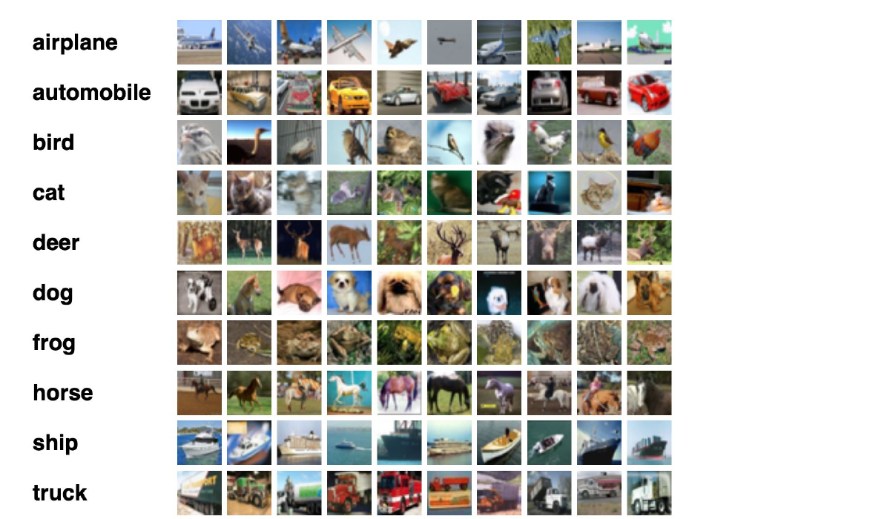
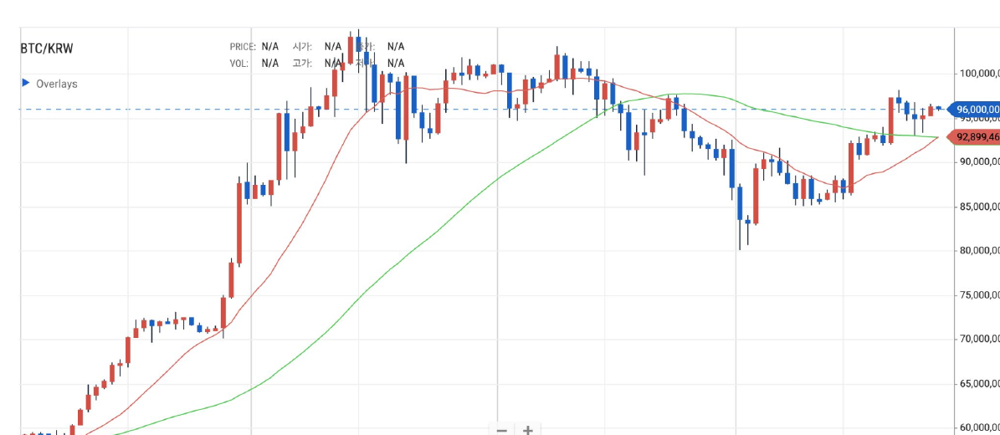
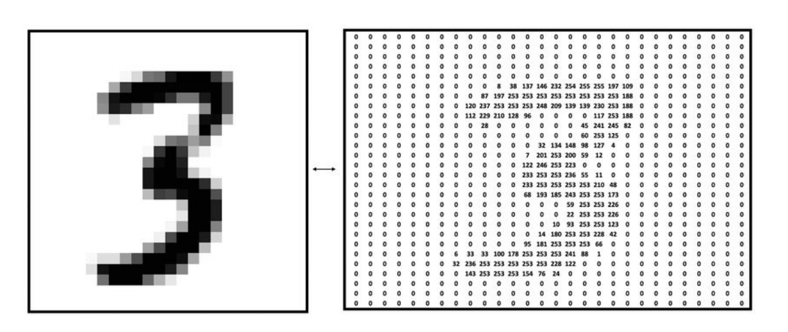
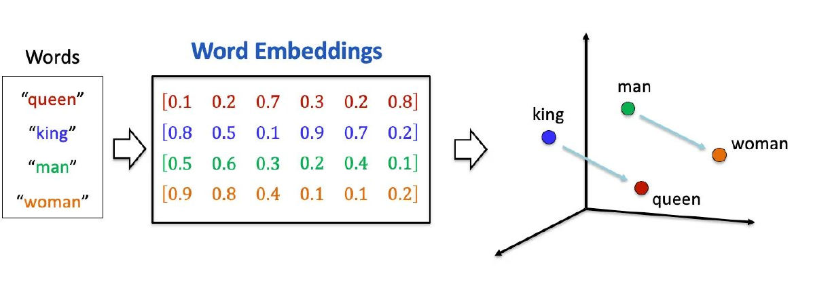

What Is Learning?
A model is a function. Training builds a look-alike.
Albert No · Yonsei University
Sangnam AI Leader · Week 3
This Session
A Model Is a Function
Six products you already use, one shape underneath
Six Products, One Machine
Photo → label
Which of ten categories?
Review → mood
Positive or negative?
Sentence → next word
What comes after?
Korean → English
Same meaning, new words
History → price
Where does it go?
Part → pass / fail
Ship it or scrap it?
Sorting Photographs

In goes a photo. Out comes one of ten words.
Reading a Review
이동진 평론가
기생충
영화 · 2019
★ 4.5
상승과 하강으로 명징하게 직조해낸
신랄하면서 처연한 계급 우화.
Positive
Never the plot, never the taste — only which of two words fits.
Guessing the Next Word
The cat sat on the ______
Out comes a score for every word in the language.
Translating a Sentence
English
My dog is cute
Korean
우리 강아지는 귀여워요
Input a sentence, output a sentence. Still one function.
Forecasting a Price

In goes the past. Out comes a number, not a word.
Spotting a Defect
An image again. A two-word answer again.
Scoring an Application
A spreadsheet row in. A probability out.
Always the Same Shape
A model is nothing but a function. One input in, one output out.
Two Letters for the Afternoon
- $x$ is whatever goes in: photo, sentence, spreadsheet row
- $y$ is whatever comes out: a number, a word, a probability
- $f$ is the model, and the only thing we get to build
What Changes, What Stays
Changes per product
Shape of the input
Shape of the output
Size of the function inside
Never changes
One input, one output
No memory of you
No reasons, only patterns
Everything Becomes Numbers
Photos, sentences and customers, all as lists
A Photo Is a Grid of Numbers

Each pixel is one number from 0 to 255.
How Long Is That List?
| Image | Pixels | Numbers in |
|---|---|---|
| Handwritten digit | 28 × 28 | 784 |
| Product photo | 224 × 224 × 3 | 150,528 |
| Phone camera shot | 4032 × 3024 × 3 | 36,578,304 |
The function has to accept every one of them at once.
A Word Is a Point in Space

Words with similar uses land in similar places.
A Customer Is a Row
| Tenure | Monthly spend | Support calls | Left us? |
|---|---|---|---|
| 34 months | 78,000 | 1 | no |
| 6 months | 121,000 | 7 | yes |
| 52 months | 45,000 | 0 | no |
The last column is what we want. The rest is what we have.
Naming the Parts, Six Times
Photograph
$x$ pixel grid
$y$ one of ten words
Film review
$x$ the sentence
$y$ positive
Unfinished line
$x$ words so far
$y$ the next word
English phrase
$x$ source sentence
$y$ Korean sentence
Price history
$x$ the past window
$y$ tomorrow's close
Camera frame
$x$ the part photo
$y$ pass or fail
Three Shapes of Answer
A number
Price, demand, temperature
A label
Cat, spam, pass, fail
A distribution
76% repay, 24% default
Same machine underneath. Only the output slot differs.
Why This Matters Commercially
- One toolkit covers vision, text, and tables
- A team that ships one product can ship the next
- The hard part moves from code to data
Turning your problem into numbers is most of the project.
Where the Function Comes From
Rules out, data in
The Old Way — Write the Rules
Human expertise, hand-written, one rule at a time.
What Defines the Digit Zero?
- Every rule you write has a counterexample
- Sloppy handwriting breaks the closed loop
- An oval breaks "roughly round"
- Nobody can enumerate the exceptions
Now try it for "when does this stock rise?"
Why Rules Run Out
Cost
Every rule needs an expert
Every exception needs a patch
Reach
Thousands of rules, still brittle
Hard tasks resist description
The knowledge exists in your data long before anyone can write it down.
Learning, Defined in 1959
“The field of study that gives computers the ability to learn without being explicitly programmed.”
Arthur Samuel, who taught a program to beat him at checkers.
Three Words: Function, Data, Loss
Every method this afternoon is these three, rearranged.
The Function We Wish We Had
A perfect labeller lives in the world. We never get to see it.
We Only See Examples
- $n$ pairs where somebody already knew the answer
- Each pair is one peek at the ideal function
- Collect enough peeks and the shape emerges
Training Builds a Look-Alike
Training means mimicking the ideal function using only the examples we hold.
Which Look-Alikes Are Allowed?
Before searching, we fix the shape of the candidates.
- Straight lines only: two dials, $a$ and $b$
- Small family, fast search, limited reach
- A modern network is the same idea with billions of dials
“Close” Everywhere Is Impossible
We would love $g(x)$ near $f(x)$ for every possible input.
- There are more possible photos than atoms nearby
- We know the true answer for almost none of them
- So the ideal test can never be run
“Close” on Our Examples
Check agreement only where we know the answer.
This swap is the founding compromise of the whole field.
Scoring a Single Guess
One person is 172 cm and weighs 85 kg. Our line says 92 kg.
- Squaring kills the sign: too high and too low both cost
- Squaring punishes a big miss far more than a small one
Averaging Over Everyone
- One number that grades the whole model
- Lower is better, zero is a perfect fit on our data
- Now “find a good function” became “make this number small”
The Recipe
- Collect examples with known answers
- Choose the family of functions you allow
- Choose a loss that scores a guess
- Search the family for the smallest loss
Every product this afternoon is these four lines.
Line 4 is the only one a computer does. Lines 1 to 3 are yours.
Searching Means Turning Dials
Same job at every scale: settle the dials.
Somebody Made Those Labels
- Radiologists marked the tumours
- Inspectors marked the defects
- Your own logs marked who churned
Labelled data is the budget line, not the algorithm.
The Model Inherits Your Data
| What is in the data | What the model learns |
|---|---|
| Only summer photos | Fails in December |
| Past hiring decisions | Past hiring bias |
| Defects labelled by one shift | That shift's standards |
Nothing in the recipe protects you from this.
Two Flavours of Answer
Classification
Answer from a fixed list
Spam, defect, churn, digit
Wrong or right
Regression
Answer is a number
Price, demand, delay, dose
Wrong by how much
Reading the Recipe
Same three lines, every product
Recipe — Spam Filter
- Examples: messages your users already marked
- Family: weights over words and sender history
- Loss: penalty for each misfiled message
A missed spam annoys. A blocked invoice costs money.
Recipe — Demand Forecast
- Examples: three years of weekly sales per store
- Family: a curve over season, price, promotion
- Loss: squared error in units shipped
Overstock ties up cash. Understock loses the sale.
Recipe — Defect Detection
- Examples: line photos, each marked pass or scrap
- Family: a deep network over pixels
- Loss: heavier penalty for a missed defect
The loss is where your business priorities enter the maths.
Four More, Same Three Lines
| Product | Examples | Answer |
|---|---|---|
| Churn alert | Past subscribers | Leaves or stays |
| Credit score | Past loans | Repayment chance |
| Ticket routing | Past tickets | One of eight teams |
| Delivery ETA | Past trips | Minutes |
The Recipe Is the Field
Research rarely invents a new recipe. It fills the slots better.
- Richer families: deep networks, transformers
- Smarter losses: probabilities, human preference
- Faster search: the engine of the last decade
Three Questions Left Open
- How large a family should we allow?
- How do we search when there is no formula?
- What if the answer is a label, not a number?
The rest of the day is these three questions.
Patterns, Not Reasons
A model that predicts umbrella sales from cloud cover knows nothing about rain.
- It found a correlation that held in your data
- It cannot tell you which way the causation runs
- It will follow the pattern off a cliff
Patterns Go Stale
- Prices move, tastes move, competitors move
- The examples are always from the past
- Accuracy decays quietly, with no error message
A deployed model is a subscription, not a purchase.
The Afternoon Ahead
That is the whole idea. Everything else is detail.